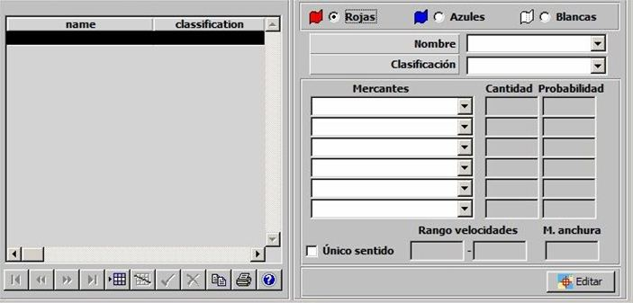
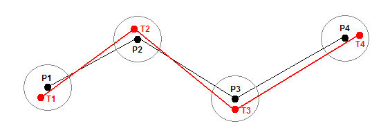
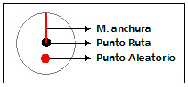

Rutas de Tráfico Mercante

Mediante esta tabla se especifican todas las Rutas de Tráfico Mercante incluidas en el Ejercicio, clasificadas por bando. Para cada una de ellas, al inicio del Ejercicio se crearán un número aleatorio de mercantes de hasta 6 tipos distintos, repartidas aleatoriamente a lo largo de la ruta. Durante el Ejercicio, los mercantes se moverán recorriendo la ruta y encenderán o apagarán sus radares de forma aleatoria (según la pauta establecida en Galeon.ini).
Durante la ejecución del Ejercicio, a cada unidad se le presenta en la Pantalla Táctica las Rutas de Tráfico Mercante de su bando y del bando neutral.
Para cada ruta se especifican los siguientes parámetros:
Mercantes: Este parámetro determina el tipo de mercantes que se crearán en la Ruta de Tráfico Mercante. Se podrán seleccionar hasta 6 tipos distintos de mercantes de entre todas las unidades de superficie ya incluidas en el Ejercicio, cuya plataforma sea de Tipo Mercante (ver apartado Plataformas de Superficie).
Cantidad: Este parámetro determina la cantidad de mercantes que se crearán en la Ruta de Tráfico Mercante.
Probabilidad: Este parámetro introduce un elemento de aleatoriedad en la cantidad de cada tipo de mercantes creados una ejecución del Ejercicio, de tal manera que cada vez que se ejecute este Ejercicio el número de mercantes creados en la Ruta de Tráfico Mercante puede ser distinto.
Ejemplo: Para una cantidad de 10, en cada ejercicio:
Si Probabilidad = 0 % ⇒ No se crea ningún mercante nunca.
Si Probabilidad = 50 % ⇒ Se crean aproximadamente 5 mercantes.
Si Probabilidad = 100 % ⇒ Se crean 10 mercantes siempre.
Para una cantidad de 50, en cada ejercicio:
Si Probabilidad = 0 % ⇒ No se crea ningún mercante nunca.
Si Probabilidad = 10 % ⇒ Se crean aproximadamente 5 mercantes.
Si Probabilidad = 100 % ⇒ Se crean 10 mercantes siempre.
Debe tenerse en cuenta el error cometido con respecto al valor esperado según el porcentaje, será menor mientras mayor sea la Cantidad.
Rango Velocidades: Este parámetro determina la velocidad máxima y mínima que se asigna a los mercantes. La velocidad asignada es un valor aleatorio comprendido entre el máximo y el mínimo. Por defecto la velocidad del mercante se calcula de nuevo cuando el buque llega a cada punto de la ruta e inicia un nuevo tramo. No obstante, se puede configurar para que la velocidad sólo se calcule al crear la ruta y se mantenga constante durante todo el recorrido (configurable en Galeon.ini).
M. Anchura: Este parámetro determina el margen de anchura de la ruta que se utiliza para calcular la trayectoria recorrida por cada mercante. El uso de este parámetro se describe al final de este apartado.
Único Sentido: Este parámetro determina si la ruta es de único sentido, en cuyo caso, si el mercante llega al punto final de la ruta, inicia de nuevo el recorrido de la ruta desde el principio. En caso contrario, al llegar al final iniciará la ruta en sentido contrario.
Editar: Mediante este botón se abre la ventana de Preparación de Escenarios, sobre la que se mostrará una Herramienta de Dibujo con la que se podrá especificar gráficamente la ruta en la que se crearán los mercantes (ver la descripción de esta herramienta en el apartado Preparación de Escenario).
Con los parámetros definidos, la ruta de tráfico mercante se define como una línea que une los puntos especificados sobre la carta mediante la Herramienta de Dibujo que se abre con el botón Editar, con un número aleatorio de mercantes del tipo especificado que se desplazan en las proximidades de esta línea con una velocidad variable dentro de los límites establecidos.
Durante la ejecución del ejercicio, los mercantes que se crean en la ruta no se desplazan directamente sobre la línea de ruta sino sobre una línea aleatoria cercana que se calcula de la siguiente forma:


Además de los datos que se incluyen en esta ventana, los buques de las zonas de tráfico marítimo tienen otros datos que se obtienen a través de ficheros de texto, se trata de los datos que proporciona el sensor AIS y el Puerto de Destino. El nombre y la ubicación de estos ficheros se establecen en Galeon.ini.
Cuando se crean las rutas se lee el fichero que contiene los datos AIS y los asigna aleatoriamente a cada buque. Estos datos son los siguientes:
A continuación se lee el fichero de Puertos de Destino que contiene la lista de puertos y sus posiciones. Para asignar un puerto a un buque, se toma la posición del buque y se busca en el fichero los n puertos más cercanos al buque considerando la dirección de desplazamiento. Entre estos puertos se asigna uno de ellos de forma aleatoria como Puerto de Destino del buque. El número de puertos seleccionados n es también un valor configurable en Galeon.ini.